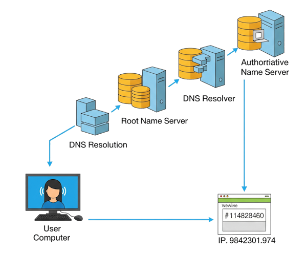

Het is altijd DNS
Netwerk of internet problemen? De oorzaak is altijd DNS! Misschien dat deze website je kan helpen je DNS probleem te fixen.
Beschrijvingen
DNS
Het Domain Name System (DNS) is het systeem en netwerkprotocol dat op het internet gebruikt wordt om namen van computers naar numerieke adressen (IP-adressen) te vertalen en omgekeerd.
NSLOOKUP
nslookup is een netwerkgereedschap dat gebruikt wordt om DNS-servers te ondervragen en zodoende informatie te vergaren over onder meer de MX-records en nameservers (NS) van een domein. De naam is een afgeleide van name server lookup.